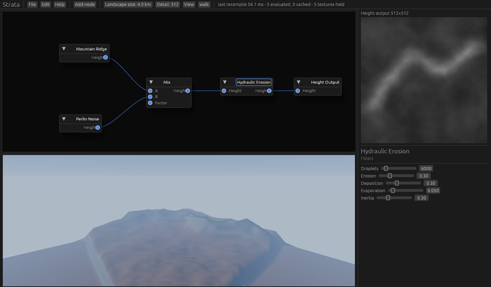
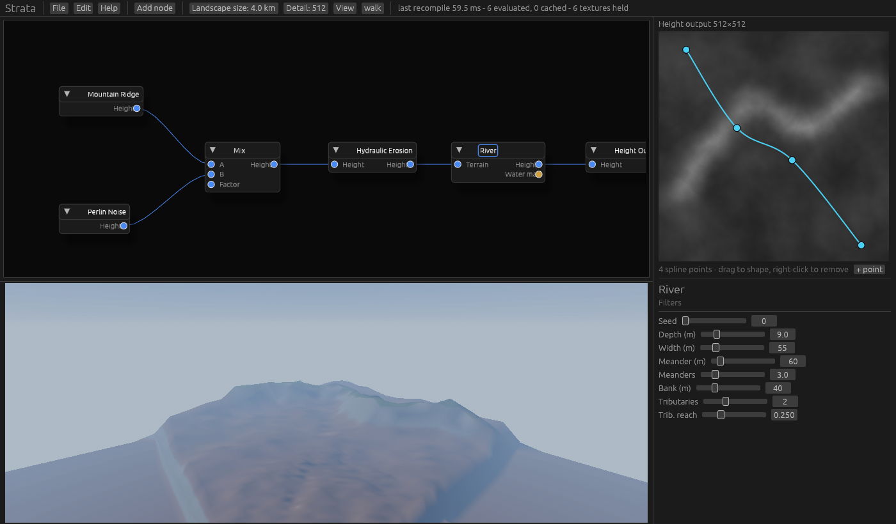
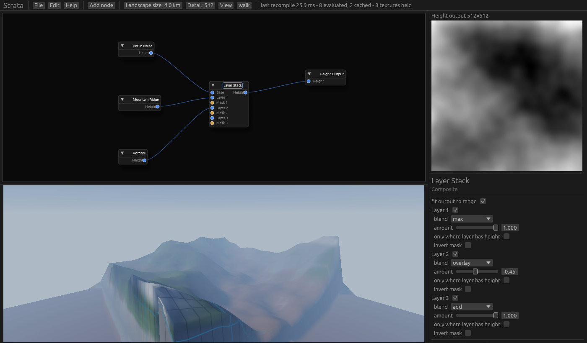
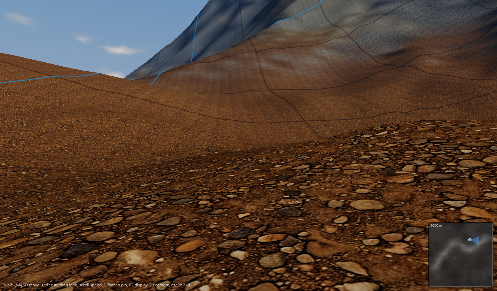
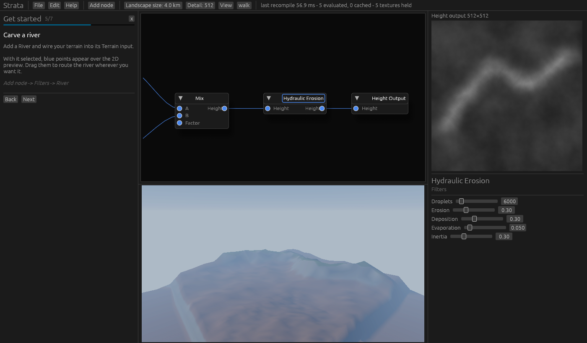

Node-based terrain editor · Windows & Linux
Connect generators, filters and masks in a node graph. Watch the terrain take shape in a live 2D preview and a textured 3D viewport — then walk it on foot, at player scale, to find out what it actually feels like to cross. Then export a heightmap your engine reads directly.
Buy on itch.io Buy on Steam Try the free demo
No launcher, no account, no DRM. Native on Windows and Linux, including Steam Deck.
Every element of the landscape is a node. Chain them, adjust them with live sliders, watch the result update. Nothing is destructive — change any step at any time without starting over.

Draw a route over the preview and get a channel with banks, meander and tributaries — plus a water mask for your material stack. The Road / Path node works the same way, cutting into hills and filling across dips so the surface never exceeds the grade you set.

Layer Stack composites up to 12 layers with 21 blend modes, per-layer opacity, masks and visibility — so landforms stack the way image layers do, with the mask deciding where each one lands.

Orbit it, or drop down and walk. The walk and follow cameras put you at eye level with the terrain you are building, because "is this hill the right size?" is a question best answered standing at the bottom of it.

Thirty-odd nodes is a lot to face on an empty graph, so Strata ships two guides, both reachable from the Help menu at any time. Neither blocks anything — the application stays fully usable underneath.

Strata writes the formats and resolutions your engine actually expects — not a generic image you have to convert.
| Engine | Resolutions | Format |
|---|---|---|
| Unreal Engine 5 | 127 – 8129 | 16-bit R16 raw |
| Unity | 33 – 4097 | 16-bit R16 raw |
| Leadwerks 5 | 128 – 8192 | 16-bit R16 raw |
| Godot | 64 – 4096 | 16-bit PNG |
| O3DE | 512 – 8192 | 16-bit PNG |
| Generic PNG | 256 – 4096 | 16-bit PNG |
Export a single map or a 3 × 3 tile grid — each tile is evaluated in its own world coordinates, so the seams line up. Splat masks are written alongside the heightmap as RGBA PNG. Projects are plain JSON: diffable, readable, and portable.
Preview sampling is independent of physical size. Pick Draft (512), Balanced (1024) or Fine (2048); the editor tells you the real sample spacing in metres and the memory cost before you commit.
Terrain is authored in units that mean something — map width in kilometres, height range in metres, river widths in metres, road grades in percent. The landscape comes out the size you meant.
Worth knowing before you buy rather than after.
The full roadmap, including what is being worked on now, is public: github.com/Orindoomhammer/strata-roadmap.
Terrain is evaluated with GPU compute shaders, so a Vulkan or DX12 capable GPU is required — roughly NVIDIA GTX 600, AMD HD 7000 or Intel HD 520 and newer.
| Minimum | OS | Processor | Memory | Graphics | Storage |
|---|---|---|---|---|---|
| Windows | Windows 10 64-bit | Intel Core i5-4000 / AMD equivalent | 4 GB | DirectX 12 or Vulkan GPU, 2 GB VRAM | 150 MB |
| Linux | Ubuntu 22.04 / SteamOS 3 or newer | Intel Core i5-4000 / AMD equivalent | 4 GB | Vulkan GPU, 2 GB VRAM | 150 MB |
Recommended for either: a GTX 1060 / RX 580 or better with 4 GB VRAM, and 8 GB RAM. The Linux build is native — Proton is not required, and it runs on Steam Deck.